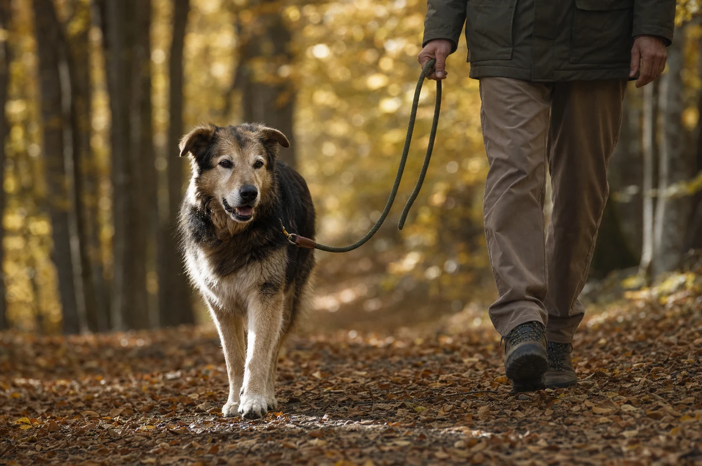
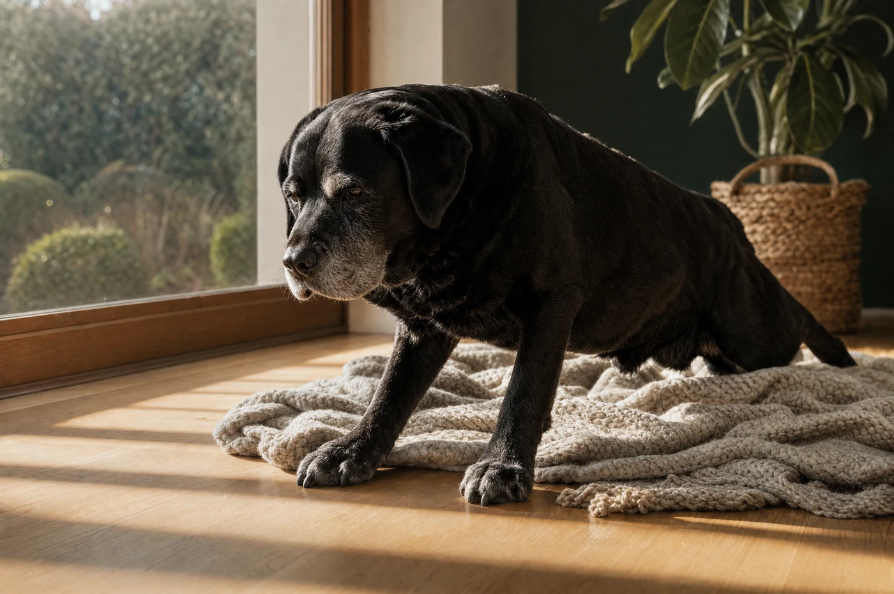

Erkennen
Acht frühe Anzeichen, die Halter regelmäßig übersehen
„Er wird eben älter“ ist der teuerste Satz im Hundeleben. Die meisten Gelenkveränderungen zeigen sich lange vor dem ersten Humpeln – nur eben nicht dort, wo man hinschaut.

Die meisten Halter merken es zuerst nicht am Gang, sondern an einer Kleinigkeit: Der Hund bleibt liegen, wenn es an der Haustür klingelt. Früher war er als Erster da. Solche Beobachtungen werden fast immer mit einem Satz abgeräumt, der bequem klingt und teuer ist: „Er wird eben älter.“
Alter ist keine Diagnose. Gelenkveränderungen entwickeln sich über Monate bis Jahre, und in dieser Zeit gibt es Signale – nur eben nicht die, nach denen man sucht. Nach dem Humpeln muss man nicht suchen, das sieht man. Die acht Punkte hier stehen alle davor.
Die acht Signale
1. Der Start ist schwerer als der Rest
Ihr Hund steht nach dem Schlafen steif auf, läuft sich in den ersten fünf bis zehn Minuten frei und wirkt danach normal. Das ist das klassischste aller Frühzeichen und gleichzeitig das, was am ehesten als „der muss erst wach werden“ abgetan wird. Achten Sie besonders auf den Morgen nach einem langen Spaziergang.
2. Er sucht sich andere Plätze
Der Hund, der jahrelang auf der Couch lag, liegt plötzlich davor. Der, der immer im ersten Stock schlief, bleibt unten. Das ist selten eine Vorliebe – es ist meistens eine Vermeidung. Hunde umgehen Bewegungen, die unangenehm sind, lange bevor sie dabei Schmerz zeigen.
3. Die Runde wird kürzer, ohne dass Sie sie kürzen
Er bleibt häufiger stehen, schnüffelt länger, dreht früher um. Viele Halter passen sich unbewusst an und merken erst nach Monaten, dass aus der Stunde eine halbe geworden ist.
4. Treppen und Auto werden zur Verhandlung
Ein Zögern vor der Treppe, ein Anlauf statt eines Sprungs in den Kofferraum, das Absetzen der Hinterhand beim Herunterkommen: Das sind Belastungssituationen, in denen sich viel Gewicht auf wenige Gelenke verteilt. Hier zeigt sich zuerst, was im Alltag noch verborgen bleibt.
5. Das Gangbild ändert sich, bevor er lahmt
Kleinere Schritte, ein leicht schaukelnder Gang, eine Hinterhand, die enger läuft als früher, oder das „Hoppeln“, bei dem beide Hinterbeine gleichzeitig aufsetzen. Filmen Sie Ihren Hund gelegentlich von hinten, wenn er von Ihnen wegläuft – im Vergleich zweier Videos im Abstand von einigen Monaten sieht man mehr als im täglichen Hinsehen.
6. Er leckt eine bestimmte Stelle
Wiederholtes Belecken über einem Gelenk – oft Handwurzel, Ellenbogen oder Knie – ist ein häufig übersehenes Zeichen. Nicht jedes Lecken hat mit Gelenken zu tun, aber wenn es immer dieselbe Stelle ist, lohnt der Blick.
7. Die Muskulatur wird ungleich
Wenn ein Bein weniger belastet wird, baut die Muskulatur dort ab. Fühlen Sie mit beiden Händen gleichzeitig über die Oberschenkel – ein Seitenunterschied fällt beim Tasten deutlich früher auf als beim Ansehen.
8. Er wird dünnhäutiger
Weniger Geduld mit anderen Hunden, Rückzug beim Anfassen der Hinterhand, Unruhe in der Nacht: Dauerhaftes Unbehagen verändert das Verhalten. Wer das nur als „er wird eigen im Alter“ liest, verpasst den Hinweis.
Kein einzelnes dieser Zeichen beweist etwas. Drei davon zusammen sind ein Grund für einen Termin.
Was Sie zum Tierarzt mitbringen sollten
Der häufigste Fehler beim Termin ist der Satz „Irgendwie läuft er komisch“. Eine Untersuchung wird besser, wenn Sie konkret werden können. Drei Dinge helfen:
- Ein kurzes Video vom Gang – von hinten und von der Seite, auf ebenem Boden, im Schritt und im Trab. Zwei Aufnahmen im Abstand von ein paar Wochen sagen mehr als eine.
- Eine Woche Notizen: Wann ist er steif, wann nicht? Vor oder nach der Bewegung? Bei welchem Wetter? Nach welcher Belastung?
- Das aktuelle Gewicht, gemessen und nicht geschätzt. Es ist die wichtigste Zahl im ganzen Gespräch – siehe unten.
Was danach hilft – in dieser Reihenfolge
Wenn eine Gelenkveränderung festgestellt ist, gibt es eine ziemlich klare Rangfolge dessen, was etwas bringt. Sie ist unbequem, weil das Wirksamste nichts kostet und Mühe macht:
- Gewicht. Jedes Kilo zu viel wirkt auf ein verändertes Gelenk bei jedem Schritt. Der Effekt einer Gewichtsreduktion ist in Untersuchungen deutlicher als der jeder Ergänzung.
- Bewegung, richtig dosiert. Gelenke ernähren sich über Bewegung. Schonen verschlimmert langfristig, Überlastung ebenso – dazwischen liegt der Weg.
- Die Umgebung. Rutschfester Boden, eine Rampe, ein ordentlicher Liegeplatz. Billig, unspektakulär, wirksam.
- Tierärztliche Therapie, wenn Schmerz im Spiel ist. Nichts davon ersetzt sie.
- Ergänzungsfuttermittel, als Begleitung – nicht als Ersatz für die vier Punkte davor.
Warum drei Wochen nichts beweisen
Wer heute anfängt und in zehn Tagen ein Urteil fällt, wird sicher enttäuscht. Das gilt für Fütterungsumstellungen, für Bewegungsprogramme und für Ergänzungen gleichermaßen. Realistisch ist ein Zeitraum von drei bis sechs Wochen, bis sich im Alltag etwas zeigt – und der Maßstab ist nicht das Gefühl, sondern die Beobachtung: Steht er morgens leichter auf? Kommt er die Treppe wieder allein? Hält er die ganze Runde durch?
Schreiben Sie es auf. Erinnerung ist ein schlechter Zeuge, gerade wenn man sich eine Verbesserung wünscht.
Zu diesem Text
Geschrieben von der Redaktion von NatureFlow Pets. Dieser Artikel ersetzt keine tierärztliche Beratung. Wenn Ihr Hund lahmt, Schmerzen zeigt oder sein Verhalten sich ändert, gehört er untersucht – alles Weitere kommt danach. Vor dem Livegang wird jeder Ratgeber-Text von unserer tierärztlichen Beratung gegengelesen.
Weiterlesen